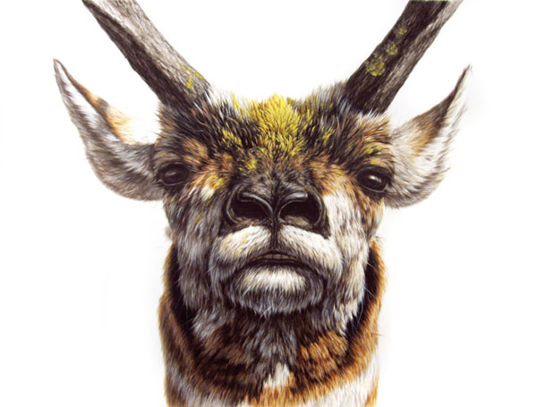
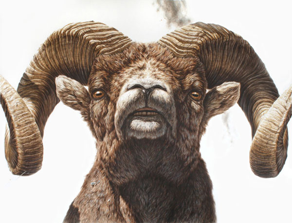
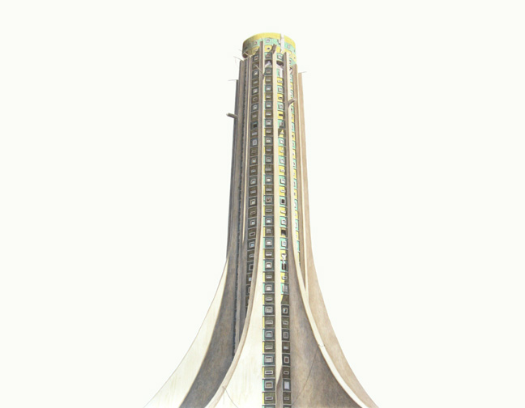

-
Charismatic megafauna: Interview with George Boorujy
by Debora Kuan April 21, 2011
George Boorujy has exhibited widely in the US and abroad and is represented by PPOW Gallery in New York. Born and bred in New Providence, New Jersey, he now lives and works in Brooklyn. Debora Kuan visited his studio in Gowanus recently to discuss realism, the animal gaze, and our primal need to decorate. They continued their conversation over email.
DK: I am interested in the confrontational aspect of your animal portraits—as you have called them—since giving each animal that kind of subjecthood raises them to the status of individuals. Is it your intention to reverse a hierarchy in the viewer’s mind, since the human beings that occupy your images are not given the same kind of status? They seem subordinated to the narrative, whatever it may be.
GB: The word “confrontational” comes up a lot with the animal pieces. It’s funny, I never really intended them to be confrontational. But I do want the viewer to confront the subject. The gaze is so important in that regard. It changes the experience to one of interaction rather than simple observation. We use animals for so much—for stand-ins, symbols, labor, companionship, food. I want people to think about what they are, how they’ve been formed to do what they do. I don’t want to put animals above people, but we do live together, and this is their planet as well. That sounds SO hippie, but whatever.
When it comes to depicting people, it’s tricky. Viewers already bring so much to the table as soon as they look at another human being that the image and what it’s about can be overshadowed by that. Really my work is all about how we fit into the environment, and how we interact with it—I want to show how we are part of it. So maybe the people become a little smaller because they’re usually fitting into a whole. Although I have done a couple of human portraits, but those are stripped of their expected contexts, and I guess they’re presented more like animals. Which is what we are.
DK: It must be a primal, naturalistic impulse to want to draw animals or things observed in nature—I’m thinking of cave painting, of course, and ancient forms of art. But also, every little kid begins life by drawing. Drawing is our first “written” language in a way, yet somewhere along the way, most of us stop doing it.
GB: In a way I’m still drawing the same stuff I was when I was five! I always drew animals, like most kids, but I guess I just never grew out of it. When you get older, there’s this idea that if you’re making art it also has to be more “adult” or “heady” or something. But there is something primal about drawing, something pre-language. I think there is an impulse to depict what’s around us. Maybe it is to understand it better or internalize it on some level? I don’t know.
Archeologists always talk about how cavemen were trying to attain some spiritual connection with or power over animals by depicting them. Maybe that was true some of the time. But also I think they were just doing it to do it, just decorating, adorning. Sprucin’ up the ol’ cave, so to speak, like, “Hey, wouldn’t it look so nice if we put horses on that wall?! Let’s brighten up this place!” I guess that’s a bit Gary Larson.
DK: “This cave is morose!” I can see that. Or it’s just the simple recording, note-taking aspect: “Today I saw this woolly mammoth and tried to hunt it, but the damn thing got away.” Your choice to work with paper, rather than canvas or another material, seems to speak to that notational quality too. Also it aligns you with nature illustrators. Can you talk about this decision?
GB: Paper takes itself less seriously than canvas. It allows the viewer in more. Initially I started working with ink and paper because it was faster than oil. I was too impatient at times with oil—which is funny because the way I paint is so painstaking that it takes as long in oil or ink. But I do really like the immediacy with paper. My images became really distilled and spare. The negative space is so important to the work and the compositions, and conceptually the paper reinforces that. There’s no going back with ink, so every mark counts, and every bare space is there for a reason.
I like the connection to classic nature illustration. The connection is going to be made anyway since I’m doing nature on paper. Watercolor or ink on paper was always used in “recording” type of work, whether it was to depict a new species from a new land, or anything that needed to be captured and recorded. I think of my images as “recording” somehow, like recordings of something that I could have seen, or could have happened.
DK: I like that irony in your work. Here’s a medium used traditionally because it’s quick and yet your work is so meticulous and exacting. The viewer can’t help but notice the commitment and unusually close attention to the subjects. Can you talk about that highly realistic aspect? You’ve said that you are often criticized for rendering a subject near-photographically instead of simply taking a photograph. Roger White recently wrote a piece for “Modern Painters” about how realism continues to be marginalized in contemporary art criticism, despite the recent resurgence of figurative painting. What do you make of this ongoing suspicion around the issue of representation?
GB: It was more so in undergrad that I found myself defending representational art. One time in a crit someone brought the charge that my work was too “pretty.” That really doesn’t mean anything, although I know what he meant. I wasn’t making great work—I was 19 or 20. The work was technically good, but I wasn’t really saying all that much. But neither were the 20-year-olds who were working completely non-representationally. It was just easier for them to cover up inequities in the work and act like people maybe didn’t “get” what they were doing.
That being said, I really don’t like “show-offy” painters, work in which you see the craft and only the craft. I don’t see the point in a feat of mere technical proficiency. It’s like someone who has the best vocabulary, but never anything interesting to say. Then why not just take a photo? There actually are no photos of the stuff I draw so that’s not an option for me anyway. For most of the animals, and a lot of the buildings, I actually do make little sculptures and then draw from those.
Craft is tough. I love it, clearly, but I hate when it gets in the way. I want the viewer to see the image before they see how it was made.
DK: It seems as though the art world is still mired in an early to mid-20th century concern in this respect. Oddly enough, in the literary world, despite similar early fears that film would render the novel obsolete, for example, the debate has largely dissipated. I mean, the novel that is being touted as one of the most important literary works of our day is one of high realism: Jonathan Franzen’s Freedom.
GB: I think it might come down to communication. People in general are going to want to read a story, at least most of the time, not just a collection of words. And most people listen to music that has a beat, and rhythm, and melody. Visual art might be the same way. People like pictures of things. Sometimes I think people feign a bit of interest in really conceptual visual art so that they seem smarter. Believe me, some of the best work really is purely conceptual, but a lot of it is crap too. It’s just easier to ignore. How many people sit down and read a really experimental novel, or plug in their earbuds and turn on dissonant experimental noise? Occasionally, yes, but all the time? It’s easy to ignore crappy visual art because it’s not assaulting your ears. You can just turn away.
What I’m saying is that if you have something to say, it can be helpful to use an existing language—visual or otherwise—to communicate that idea.
DK: Can you address the surrealism in your work? I like the ambiguity you keep in play by gesturing both forward and backward in time. It’s also a strategy that helps keep any possible didacticism at bay.
GB: None of the buildings or landscapes that I draw exist. Nor have I seen a three-legged bear crouching over a seagull carcass, or a doe nursing a full grown buck. But I want all that to seem like something one could see. I want it all to seem plausible. Getting back to the craft thing for a second, that’s one of the reasons I render the way I do—to make it look real. I think the surreal aspect lies right in there. Things look real, or “witnessed,” but they’re off.
I try to keep my work, or the suggested narratives of my work, vague and up for interpretation. There’s a real environmental bent to my work, but what am I going to do, draw a picture of a crying bird covered in oil? I love oil! I depend on it, like we all do. I also eat animals. But I also consider myself a conservationist and environmentalist—whatever that actually means. What interests me is how we navigate and see this world we’re in, and the issues are complicated. We all know the tragedy of how we’re changing, or wrecking, our environment. There’s no need to spell out the disasters one by one.
DK: Instead, those disasters are undertones everywhere. We don’t know the specifics, but there’s a sense of latent violence or imminence, especially in the landscapes. I am also thinking of the piece with the brutalist monument with the rubber tree gutters. Can you talk about the conflation of the natural world and the man-made in that piece?
GB: Well, it ties back into how we fit into our environment, and that includes what we build, how we mark the landscape, how we use and change materials, the forms our buildings take, what conventions of building become common, which are dictated by pure physical possibility. “Rubber Tree” (2008) was that pretty much in a nutshell. It’s about the Congo to a large degree, but more generally, about post-colonial Africa. The rubber industry built and destroyed the Congo. It’s a brutal industry. There was such optimism and excitement in the post-colonial era, but we know what has happened to the Congo since. I wanted the building to seem like something that was put up then, in the 60’s. There’s a building in Brazzaville that has a vaguely similar shape, but I wanted to make a tower that really looked like a tree, with the buttressed roots, etc… The gutters reflect the taps for the rubber. I wanted to then cut the building off bluntly and brutally as a reference to how they would occasionally chop the trees to get as much rubber as possible, not thinking of any sustainability. More importantly, it’s a reference to the chopping off of hands and other appendages which is an ongoing legacy that started during the colonial period.
Most of these ideas aren’t evident in the piece. But hopefully it looks like a somewhat strange, brutal building.
DK: Tell us about your new project involving pelagic birds. How is it a departure, if at all, from your other work?
GB: Here’s the basic gist: I’m putting original drawings of pelagic (open ocean) birds in bottles, along with a questionnaire, and launching them into New York waterways. I had wanted to do a project about the garbage gyres in the ocean, our connection, and obliviousness, to the ocean, and our impact on it. I decided on birds because I had to limit it somehow or else I’d be drawing diatoms until I was 80. Nothing better than charismatic megafauna! By nature of being pelagic, these birds occupy the largest surface area of the earth. Yet we hardly see them. Most people wouldn’t be able to name one, and even experts know very little about most of them.
I’ve also been very interested in the value of art, and what we value in general. We must value all our plastic goods—at least, we value the fact that they’re disposable, because we dedicate a lot of energy to producing and distributing them. Yet, once we dispose of them, they are considered trash. And as far as art goes, only a select group is able to afford art. I was interested in giving it away, equalizing that playing field, even if only in a tiny way. I was also interested in the question of what exactly I’m doing if I throw something that has market value in the ocean. Is it littering? If I threw a hundred dollar bill on the sidewalk, is that littering?
I assume most of these bottles and drawings will never be found. But then, in a way, when my work is sold, it too goes adrift and I don’t see it again.